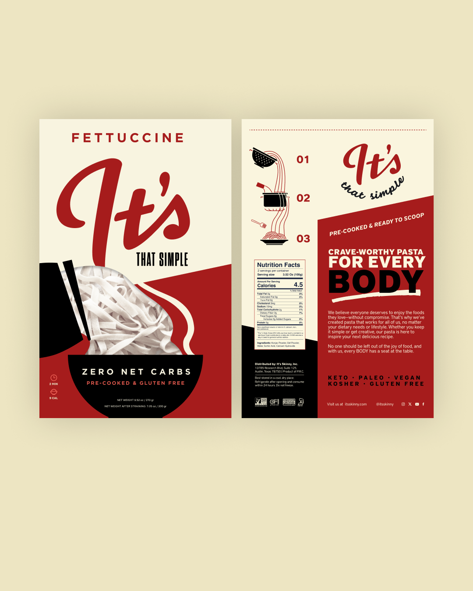
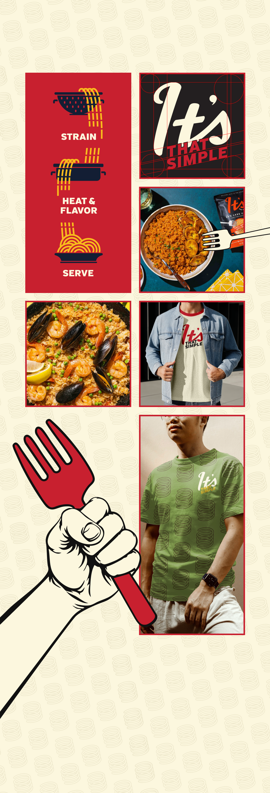
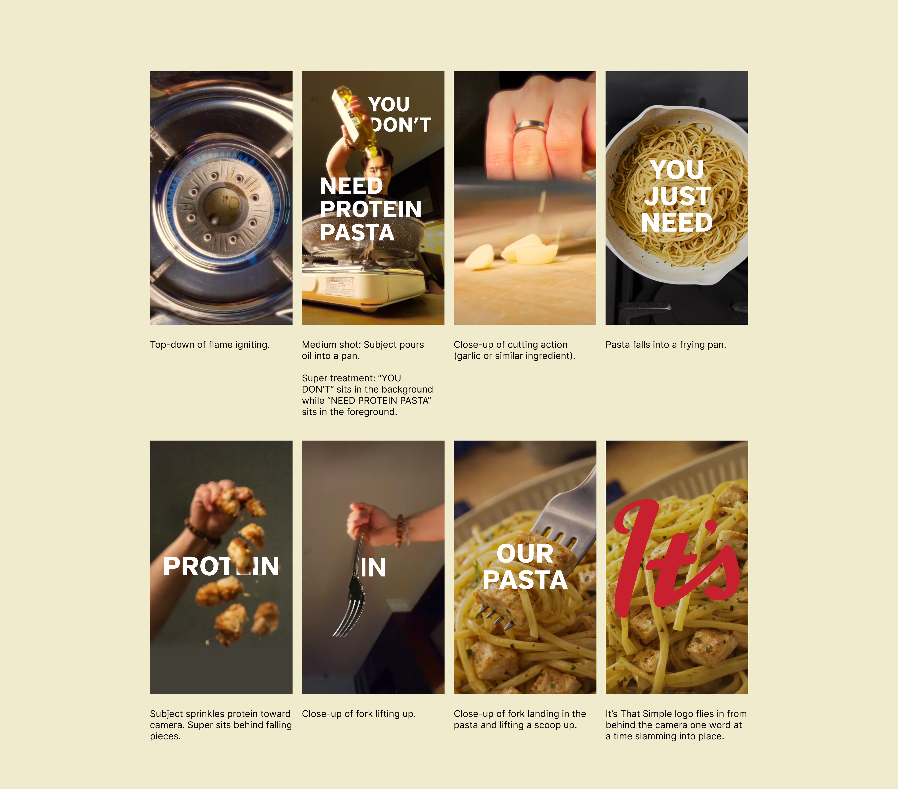

Developed packaging concepts and social storytelling for It’s That Simple Pasta Meals. Package design performed strongest among alternate proposals. Led the concept and production of transition-driven social videos, using fluid motion to connect shots.



A tightened timeline and shifting production conditions required rapid adaptation from concept to execution. New recipe ingredients and direction, limited shoot conditions, and evolving creative feedback introduced inconsistencies in footage and disrupted the original storyboard flow.
Preserved the core idea of fluid motion by reworking transitions and refining pacing in post-production. Addressed inconsistencies through color correction, selective compositing, and simplified yet intentional motion treatment. Collaborated cross-functionally to refine voiceover and iterate on music, delivering a final piece under tight constraints.